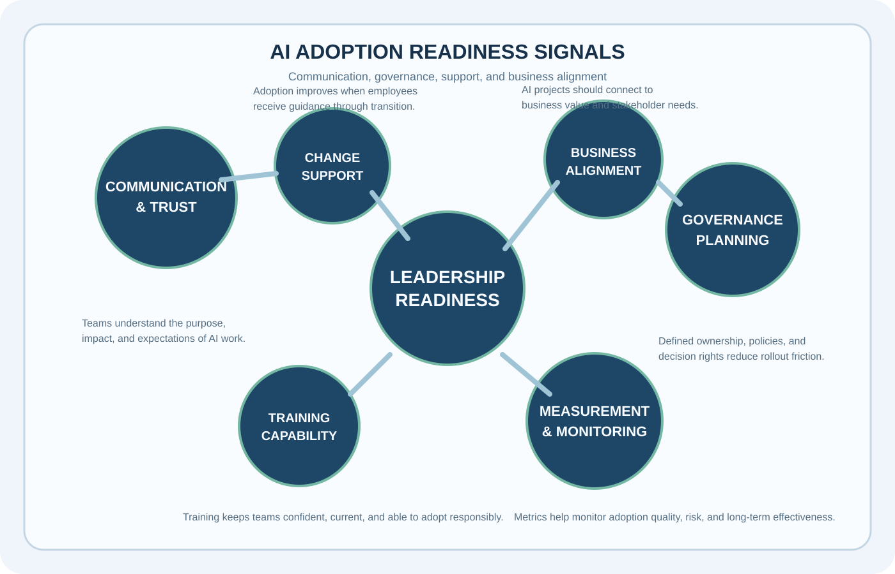
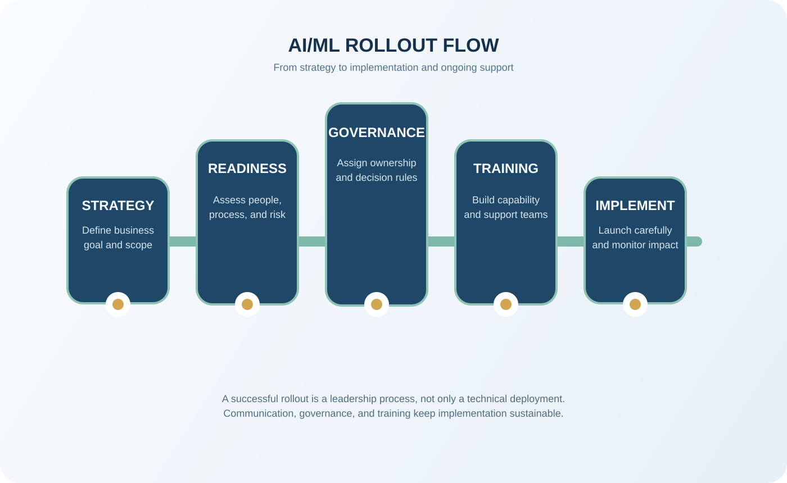

Artifact Information
This artifact focuses on leadership preparedness for AI/ML adoption, showing that technical knowledge alone is not enough without planning, stakeholder trust, and communication that supports change.
Introduction
The artifact frames AI/ML adoption as both a technical and organizational challenge. It emphasizes that implementation success depends on how well teams align around purpose, readiness, governance, and long-term support.
Description
This leadership reflection connects AI understanding with people-centered practices such as communication, stakeholder alignment, trust-building, and structured change management.
It also highlights the importance of training, defined ownership, and business alignment when organizations move from learning about AI to implementing it in real environments.


Objective
- Assess leadership readiness for AI/ML adoption
- Identify strengths and growth areas in change support
- Connect AI strategy with business and team needs
Process
- Reviewed organizational AI/ML adoption needs
- Considered communication, governance, and planning responsibilities
- Mapped strengths in adaptability, curiosity, and stakeholder awareness
- Identified areas for continued growth in structured support and implementation readiness
Tools and Technologies Used
Value Proposition
This artifact demonstrates that responsible AI adoption requires leadership readiness, clear communication, and practical planning in addition to technical understanding.
Unique Value: Connects AI knowledge with leadership and implementation thinking.
Relevance: Useful for understanding how AI/ML adoption succeeds in real organizational settings.
Reflection
This project strengthened my understanding that successful AI adoption is shaped by communication, stakeholder alignment, and planning just as much as by technical skill.
References
AI/ML leadership assessment materials; change-management concepts; organizational adoption frameworks.